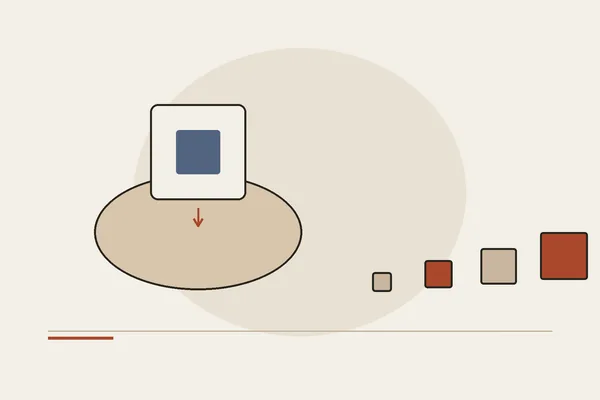

Modelling the possible archaeological past(s): Agent-based modelling of Harappan seal use and survival
Gokhale P, Ameri M · 2026 · CAA Proceedings 51(1)
Why are Harappan sealings so rare if seals were used to make impressions?
Analysis
- What they tried
- Agent-based model (NetLogo) of seal, sealing and house production and decay at Mohenjo-daro DK-G South.
- Method and data
- DK-G South: about 490 seals and 10 sealings from over 20 feet of deposit (more than 15% of all Harappan seals). Corpus-wide about 2200 seals vs about 250 impressions. Four scenarios, seal-energy 3 or 10 impressions per seal, 50 iterations.
- Key results
- If each seal made at least 50 impressions, about 110,000 sealings would have existed; the ~250 known are 0.227% of that. In the models, survival leaves about 22-24 seals but hundreds to over 1,000 sealings, far more sealings than found.
- Limits
- Early-stage model; parameters are guesses; house counts become unrealistic (e.g. 1702) in one scenario. Does not model excavation recovery bias in detail.
- Ideas for us
- Directly relevant to administration framing. The seal-to-sealing ratio (about 2200 : 250) argues against a Mesopotamian-style sealing bureaucracy. Use object type (seal vs sealing vs tablet) as a covariate and test whether sign sequences on sealings are a non-random subset of seal texts.
- Touches our work
- administration, reg_findspot, site_signal